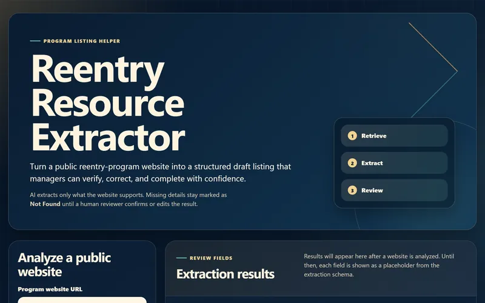
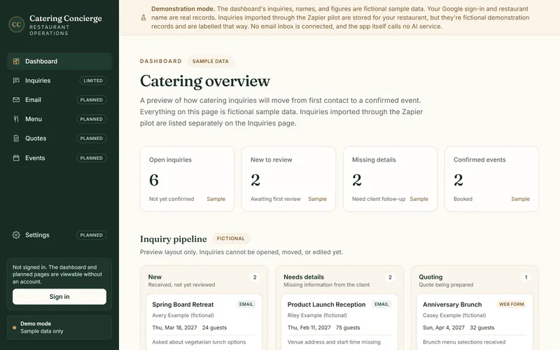
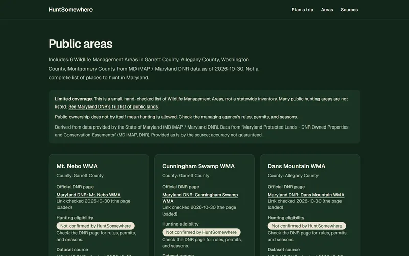

Make complex feel simple.
I’m Amber Goding. I turn real-world problems into useful tools, explain my decisions clearly, and use AI thoughtfully.
Selected work
-
01
Reentry Resource Extractor
Turns a public reentry-program web page into a draft listing. The model is instructed to use only the page’s text, the server checks each evidence quote, and a person reviews every field.
Case study- Area
- AI integration
- Stack
- JavaScript, Node.js, OpenAI API

-
02
Catering Concierge
Connects a Zapier workflow to a restaurant app: Zapier prepares each inquiry with an AI review, an authenticated endpoint stores it once, and signed-in owners review it in one place.
Screenshot shows the app’s fictional sample data.
Case study- Area
- Workflow automation
- Stack
- Next.js, Prisma, Zapier

-
03
HuntSomewhere
A trip planner for Maryland hunters: editable preferences, saved trips, and curated public areas matched by county, each with its official source and a note on what isn’t confirmed.
Case study- Area
- Application development
- Stack
- Next.js, PostgreSQL, OpenAI API

Practical tools for real work
- A
Application development
Web applications designed around the people who use them, from the first problem statement and data model to a working tool.
- B
AI integration
AI used where it genuinely helps, such as extracting, summarizing, and organizing information, with clear limits and human review built in.
- C
Workflow automation
Connecting the tools and steps behind repetitive work so information moves where it needs to go with less manual effort.
About
Thoughtful tools start with understanding people.
I’m Amber Goding, an application and automation builder who enjoys turning complicated problems into tools that make everyday work easier.
I start by asking questions and clarifying the problem before suggesting a solution. From there, I break the work into manageable steps, communicate progress, and explain the decisions along the way.
More about Amber →Let’s make it happen.
Tell me about the problem you’re trying to solve, the workflow you want to simplify, or the idea you want to build.